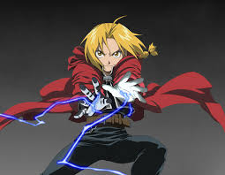
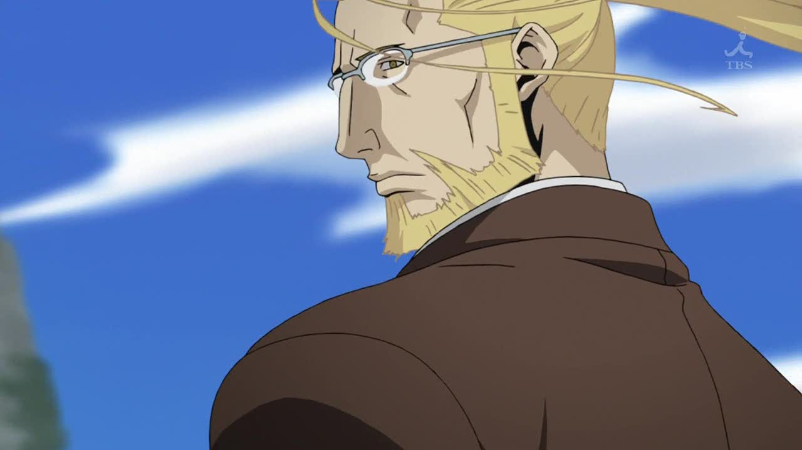

Fullmetal Alchemist ("Alquimista de Aço") é um anime baseado no mangá shonen escrito e ilustrado por Hiromu Arakawa.
Edward Elrick

Ele é o mais jovem alquimista Federal na história da série, além de ser o protagonista. Junto com o seu irmão mais novo, Alphonse, procuram a pedra filosofal com a esperança de recuperar seus corpos, desde que Edward tinha perdido a perna esquerda em uma tentativa fracassada de reviver sua mãe usando alquimia e seu braço direito para fixar a alma de Alphonse em uma armadura. Em seguida, a perna esquerda e o seu braço direito são substituídos por um automail.
Alphonse Elrick
Ele é o irmão mais novo de Edward e ambos procuram a pedra filosofal com a esperança de recuperar seus corpos. Ao contrário de Edward, que havia perdido um braço e uma perna, Alphonse perdeu todo o seu corpo, então Edward colocou sua alma em uma armadura. Devido ao tamanho da armadura é sempre confundido como o irmão mais velho e o "Alquimista de Aço"
Van Hohenheim

É o pai de Ed e Al. "Hohenheim da Luz", que nem Dante, é um alquimista que viveu transferindo a própria alma de um corpo a outro por 400 anos.
Winry Rockbel
É uma amiga de infância dos irmãos Elric. Winry vive com a avó Pinako Rockbell, que a tinha criado depois da morte de seus pais durante a guerra Ishbal. Winry é a mecânica do automail de Edward e sempre o conserta quando ele quebra.
Izumi Curtis
E a pessoa que Ed e Al mais temem, sendo os dois discípulos de alquimia da mestra. Por outro lado, o corpo é fraco, mas com uma força comparável a de um Alquimista Federal. Os irmãos Elric são estritamente os únicos seres humanos que ela protegerá com muito amor, não importa a razão.
Roy Mustang
Um Alquimista Federal com a alcunha de "Flame Alchemist". General da Brigada. Usa uma luva especial feita de tecido inflamável, e manipula as chamas livremente usando alquimia. À primeira vista ele parece ser mulherengo, mas na verdade é uma pessoa que não pode ser enganada.
Riza Hawkeye
Auxiliar do Coronel Mustang. Oficial subalterna. Ela é boa em manusear armas de fogo. Sempre fria, não se impressiona com qualquer coisa, é uma mulher calma capaz de fazer um trabalho competente. Existem rumores que secretamente todos temem ela...
Alex Louis Armstrong
Ele tem agilidade nos pés, algo que não combina muito à sua grande aparência. Ele realiza sua alquimia utilizando seus punhos, e tem a alcunha de "Strong Arm Alchemist". Viciado em se mostrar, ele é extremamente sentimental.
Maes Hughes
Um soldado pertencente as forças militares, sua posição é de tenente coronel. Sempre pensa na família, e por mais que mime demais a filha o suficiente ao ponto de ser um pai estúpido, ele é, por outro lado o oficial de informação com a melhor reputação no exército. Mustang é um amigo próximo de longa data e ambos tem laços profundos de amizade.
Lust
Tem poder suficiente para apagar uma cidade do mapa com um humor diabólico. Sua identidade ainda é desconhecida.
Gluttony
Ele só pensa em comer, sejam seres humanos ou quimeras. Age junto com sua parceira Lust.
Greed
Homúnculo com o significado de "Ganância". Como seu nome indica, ouro, mulher, status, honra, vida eterna, ele deseja tudo isso. Ele tem bestas sintéticas feitas no 5 º laboratório como subordinados, e sua popularidade é espessa.
Pride
A forma original de Orgulho é sombria e irregular semelhante ao de seu Pai quando ainda estava no frasco, porém muito maior e intimidadora, cheia olhos e bocas com dentes serrilhados. Durante a trama nota-se que o corpo humano utilizado por Orgulho é apenas um tipo de recipiente para esconder sua forma irregular feita da mais densa escuridão, uma carapaça feita pelo seu Pai para que ele pudesse andar livremente. A forma humana de Orgulho é a de uma frágil criança chamada Selim Bradley, o filho de King Bradley. Selim geralmente é visto trajando roupas sociais bem asseadas típicas de um garoto de família aristocrata do início do século 20.
Sloth
Homúnculo com o significado de "Preguiça". Um ser gigante que tem muita preguiça de fazer qualquer coisa , até mesmo andar e viver.
Wrath
Ira também conhecido como King Bradley foi o Führer de Amestris durante os acontecimentos do mangá e anime Brotherhood, e um dos antagonistas principais da série. Ele é o mais novo dos homúnculos criados por Pai.
Envy
Homúnculo com o nome de "Inveja". A aparência original de Inveja, que tem a capacidade de mudar seu corpo livremente é desconhecida.
Pai
Homúnculo, chamado pelos homúnculos de "Pai", é o principal antagonista do mangá e do anime Brotherhood. Ele é provavelmente o Homúnculo original, extremamente poderoso, que tem aparência física de Van Hohenheim. Ele é também o criador e líder dos Homúnculos.
Verdade
A verdade seria como um Deus em Fullmetal Alchemist, foi quem criou a lei da troca equivalente e o único tabu da alquimia, a transmutação humana, ele é o mundo, o universo, ou talvez tudo.